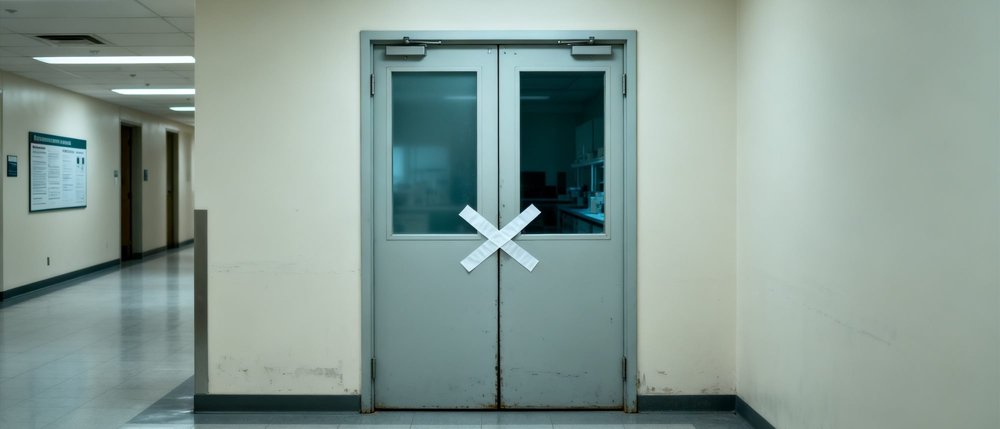
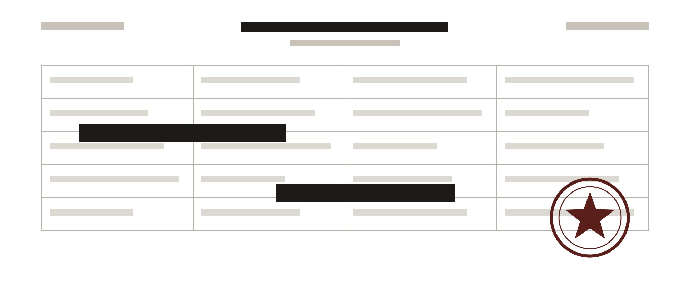

血液研究因伦理问题被叫停
项目负责人陈博士此后未再公开露面

被要求暂停研究的实验室外景。
本刊记者拍摄。
一项由私人机构资助的血液研究项目， 因伦理审查不通过被要求暂停。
项目负责人陈博士在此后未再公开露面。
项目背景
该项目于2024年启动，由一家私人研究机构资助。 研究内容为血液成分与组织修复之间的关系。
项目负责人陈博士在业内有一定知名度， 此前曾公开发表多篇关于年轻血液的研究论文。
2026年1月，项目团队曾宣布取得阶段性成果， 称部分实验数据显示特定血液成分可能对组织修复具有促进作用。
伦理审查发现的问题
据伦理委员会通报，审查中发现项目存在以下问题：
- 受试者知情同意程序不完整。
- 血液样本来源记录不清晰。
- 实际研究范围与申报内容不符。
伦理委员会要求项目立即暂停， 并对已收集的数据进行封存审查。

部分与伦理审查相关的文件。
具体内容未公开。
陈博士去向
项目被叫停后，陈博士未再公开露面。 其曾任职的研究机构表示， 陈博士已“不再参与该机构的任何项目”。
本刊记者查询公开资料发现， 陈博士的名字近期出现在一家私人美容机构的研究人员名单中。
该机构未回应本刊的采访请求。
监管回应
本刊就此事向卫生监管部门查询。 对方表示，已收到相关报告， 正在进行进一步调查。
但任何涉及人体样本的研究， 都必须在监管框架下进行。”
——卫生监管部门发言人
截至发稿，调查仍在进行中。
本文基于公开资料整理。
文中未点名任何具体机构。
如有进一步线索，请联系本刊调查组。
调查记者周岚工作电话： 852-6123-0217